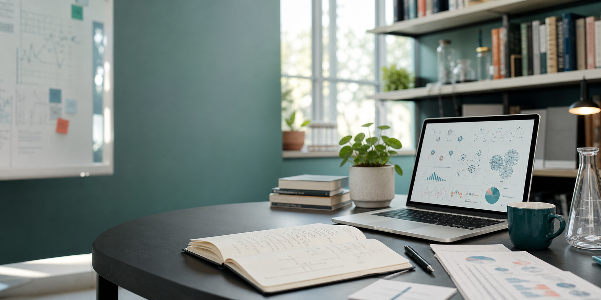

Gallery
Research life, field notes, travel, and moments beyond the desk.
A visual companion to the academic profile: conferences, research activities, lab events, travel, and personal interests.
Categories
Browse by context.
Keep this page flexible: it can hold conference photos, research snapshots, travel, hobbies, books, music, lab events, and community moments.
